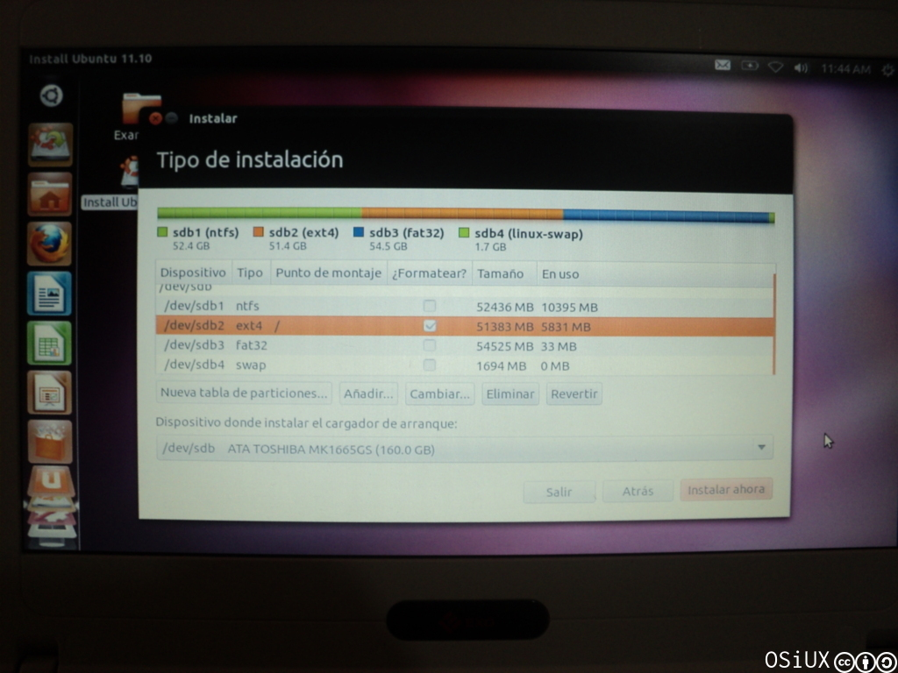
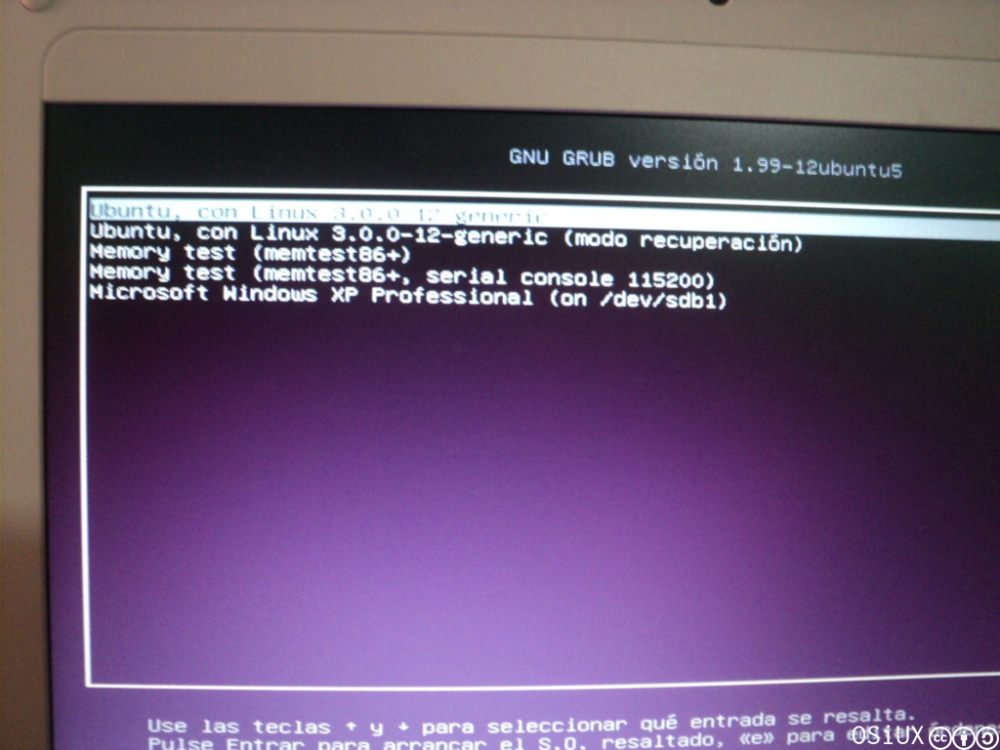

Software Libre y Conectar Igualdad
index | OSiUX | blog | docs | charlas
 
El viernes estuve en Monte Caseros y el sábado en Curuzú Cuatiá, el viaje tuvo buenos resultados, en primer lugar dí un par de charlas sobre Software Libre, Cooperativismo, Redes Libres y en segundo lugar instalé un Ubuntu 11.10 en las notebooks de Conectar Igualdad, comparto dos notas sobre cada día y espero que le sea útil a más de uno.